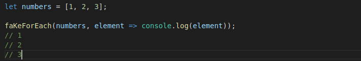

FakeForeach function
La funcion fakeForEach ejecuta una funcion para cada elemento de un array
Demo
Sintaxis
fakeForEach(array,callback(currentValue));
Parámetros
array
El array que la funcion recorrera
callback
La funcion que se ejecutara para cada item del array
Parametro 3
- currentValue
Cada item del array que sera procesado por la funcion callback
Descripcion
fakeForEach llama a la funcion callback, que sera ejecutada para cada elemento del array que pasemos como primer parametro. fakeForEach no retorna ni muta el array, salvo que se especifique en el callback que queremos retornar algun valor en algun binding.